How 是疑问词里最杂的一个 —— 这一课的 15 道题其实分成五类完全不同的问法：问数量（睡几小时）、问方法（怎么说服父母）、问过去的方式（第一份工作怎么得到的）、问习惯做法（家务怎么分工）、问普遍道理（人怎么才能赢）。前三道「怎么说服」的题最容易垮，因为中文习惯答「跟他讲道理」，而英语期待的是具体的策略和步骤。另外 how many 和 how much 后面接什么，也在这课集中考。
课本 p.64–67
15 个问题 + 1 个例题
五种问法
01先把回答的骨架搭好
How 类问题分两种答法。问数量的，给数字加一句限定；问方法的，必须给步骤——这是本课最重要的一条。只答一句 I'd talk to them，等于什么也没说。
如果是「怎么做到」— 先给方法名I'd try to make the work itself interesting, rather than just telling them to work harder.
再说具体步骤 — 用 first / then / alsoFirst I'd find out what they actually want, then I'd connect the studying to that.
最后说条件 — 什么情况下才有效That only works if they trust you, though. With a child who doesn't, nothing works.
「怎么说服」类问题的万能第一句。I'd try to… rather than…（我会试着……而不是……）
这个句式一开口就显示你有具体方案，而不是空谈：
I'd show them the options rather than argue about it.
它自带对比，听起来比单纯给建议成熟得多。
how many hours / how many snacks / how many cigarettes / how many chores
How much…?
不可数名词
how much money / how much pocket money / how much time / how much water
一个容易混的点：hour 是可数的，time 是不可数的。
所以是 How many hours do you sleep?，但 How much time do you spend sleeping?
同一个意思，两个不同的词，考试和口语里都会撞上。同理：money（不可数）但 coins（可数）。
看情况。It depends on the day — three hours on a good one.
03课本例题：从句子里读出一层意思
例题问 How do you know your parents love you?，问的是你怎么知道，不是「他们爱不爱你」。课本的答案没有列举温情小事，而是先给了一个概念（unconditional love），再用具体行为证明它。先立概念、再举证，是这个答案高级的地方。
Example
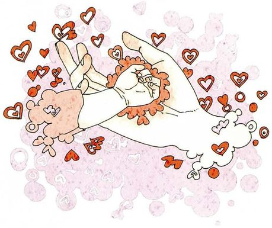
How do you know your parents love you? /ˌʌnkənˈdɪʃənl/
What you seeA baby lying on its back in the palm of a huge open hand, wrapped in a frilly collar, with little hearts floating all around. Complete protection.
What it means你怎么知道父母爱你。注意问的是判断依据，不是让你抒情。
Say it like this"We call parental love unconditional — it means parents give their children top priority whatever happens. They'll try to give you better food, a better education, better medical care. They're always ready to sacrifice their own well-being for your sake. We all know their love is endless, but I don't think anyone knows what it really is until they become a parent themselves. They may never say it out loud, but you know they always will."
这段里三个可以直接抄走的结构：
① We call X "Y", meaning that… —— 先给名词再下定义，是很漂亮的解释法；
② give top priority to sth —— 「把……放在首位」，比 care most about 正式但不生硬；
③ for your sake —— 「为了你」，比 for you 多一层「牺牲」的意味。
「我知道父母爱我」后面不要只接 because they are very good to me。
这句话没有信息量。英语里「举证」的期待是具体的、可观察的：
My mother still calls me every Sunday and asks whether I've eaten.
一个细节胜过四个形容词。
04十五个问题：怎么答出层次
每张卡三段：What you see 照着图描述，What it means 说清问法是哪一类，Say it like this 给三档答案：① 一句短答 / ② 加具体内容 / ③ 加一个对比、条件或观察。第三档请换成你自己的真事。
01
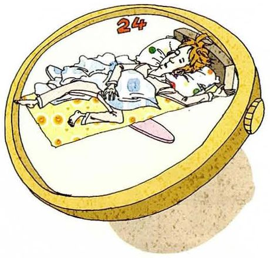
How many hours do you sleep?
What you seeA person lying asleep in bed, viewed through a huge gold watch face — the whole scene boxed inside twenty-four hours.
What it means你睡几个小时。How many + hours（可数），回答要带模糊限定词。
Say it like this①About seven, usually. ②Around six and a half on weekdays, which isn't enough. At weekends I sleep eight or nine and feel like a different person. ③On paper about seven. In practice the quality is terrible — I go to bed at one and look at my phone until two, so the seven hours are really five and a half. I know exactly what the fix is and I've known for three years. That's the thing about sleep: nobody who sleeps badly is confused about why.
02
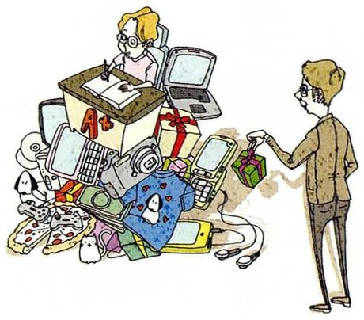
How can you persuade your children to study hard?
What you seeA child hunched over a desk surrounded by books, a laptop, a phone and games, while an adult stands to one side holding something out — a bribe, maybe a reward.
What it means你怎么能说服孩子努力学习。How can you —— 要方法，不要口号。
Say it like this①By making the work interesting rather than punishing them. ②First I'd find out what they actually care about, then I'd connect the studying to it. Rewards work for a week and then they become the reason. ③I'd try to avoid the word "hard" entirely. Telling a child to work harder is telling them they're currently not good enough, and they hear that much more clearly than the advice. What worked on me was a teacher who asked what I wanted to know and then let me chase it. I ended up doing far more work than anyone could have assigned, and it felt like my idea. I don't have children, so this is theory — but I'd rather aim at curiosity than effort.
03
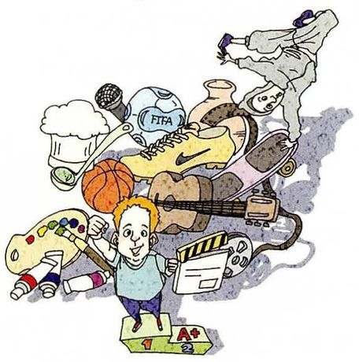
How can you persuade your parents that academic success isn't everything?
What you seeA boy standing in front of a jumble of things — a basketball, a chef's hat, a microscope, a laptop, a leash, a football. Every possible kind of achievement in one heap.
What it means你怎么能说服父母学业成功不是一切。这是本课最容易变成抱怨的一题，要说服，不要顶嘴。
Say it like this①Probably by showing them rather than arguing. ②Arguing doesn't work — they've heard it. I'd show them a concrete case: someone who did well without the grades, or better, something I'm good at that isn't measured by them. ③I'd separate the claim from the audience. To my parents, "grades aren't everything" sounds like an excuse, because they spent twenty years believing the opposite and they weren't wrong at the time — in their world the grades really did decide everything. So I'd agree with them first, then widen it: yes, they matter, and here are the other things I'm building. What I wouldn't do is win the argument. Winning it changes nothing.
04
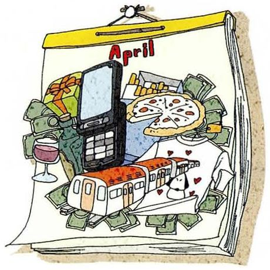
How much pocket money do you spend per month?
What you seeAn open calendar showing April, with a phone, a pizza, a glass and banknotes piled on top of it. A month, itemised.
What it means你每月花多少零花钱。How much + money（不可数）。
Say it like this①About fifteen hundred a month, including rent. ②Roughly two thousand a month — rent is most of it, then food. I keep a rough count but I don't budget properly. ③Around two thousand, and I only know that because I checked last month. Before that I'd have guessed twelve hundred. What surprised me wasn't the big things — those I knew about — it was the small ones: coffee, delivery, a taxi when it rained. They added up to more than my rent. I've since started paying for coffee in cash, purely because handing over notes makes me notice it.
05
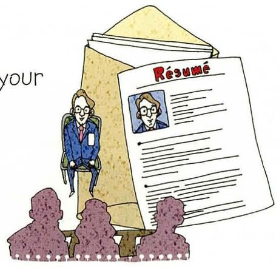
How did you get your first job?
What you seeA giant sheet of paper headed Resume with a photo on it, standing like a monument, and three tiny figures sitting in front of it. The CV as an obstacle.
What it means你第一份工作是怎么得到的。How did —— 过去时，要讲经过。
Say it like this①Through a friend, honestly. ②A senior in my lab recommended me. I sent a CV, had one interview, and started the following week — it was a summer internship, nothing dramatic. ③I applied online to about thirty places and heard nothing, then got it through a friend of a friend in two days. That experience changed how I think about applications — I'd assumed the process was a test of ability, and it turned out to be mostly a test of whether anyone knew my name. I've been less judgemental about people who "couldn't get a job" ever since.
06
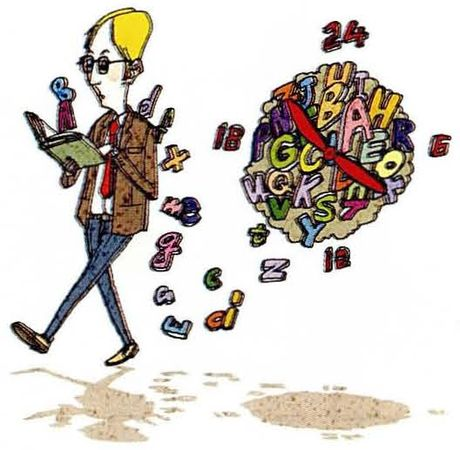
How many hours do you study English every day?
What you seeA man striding along holding a book, with a big round twenty-four-hour clock beside him and letters scattered around the ground. Time spent on the language.
What it means你每天学几小时英语。How many + hours。诚实回答比夸大更受欢迎。
Say it like this①Not as many as I should — maybe half an hour. ②About an hour on a normal day, but most of it is reading papers rather than studying. I count it as English practice and I'm not sure that's honest. ③If you count reading my field's papers, three or four hours. If you count deliberate practice — speaking, listening to something I can't quite follow — about twenty minutes, and only on the days I remember. That ratio is the whole problem: I'm very good at the input I already enjoy and very lazy about the part that would actually improve.
07
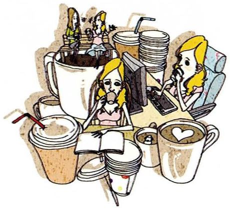
How many snacks do you eat a day?
What you seeA woman sitting at a laptop with enormous takeaway cups and cartons stacked around her — far more than one person should need in a day.
What it means你一天吃几个零食。How many + snacks（可数复数）。
Say it like this①Too many, probably two or three. ②Two or three, and none of them because I'm hungry. It's usually at about four in the afternoon, when I've stopped being productive but haven't stopped working. ③I'd say one, officially, and four in reality. What I've noticed is that I don't snack when I'm hungry — I snack when a task is hard. It's a way of leaving the desk without leaving the desk. So the count depends entirely on how the day is going, which tells you it isn't really about food.
08
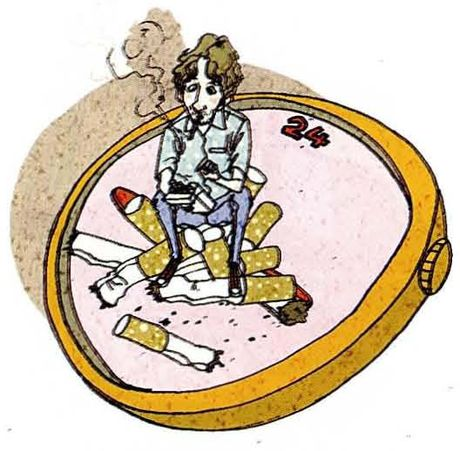
How many cigarettes do you smoke a day?
What you seeA man sitting slumped on the rim of an enormous ashtray overflowing with cigarette ends, inside a watch face. A day measured in cigarettes.
What it means你一天抽几根烟。这题预设你抽烟，不抽就大方说明。
Say it like this①None — I don't smoke. ②None, thankfully. I never started, mainly because both my grandfathers did and I watched what it did to them. ③Zero, so this is the easiest question in the lesson. But I'd add that I understand why people do — I've got other habits that are just as pointless and much better disguised. Sitting at a screen until two in the morning isn't obviously healthier than a cigarette, it just looks more respectable.
09
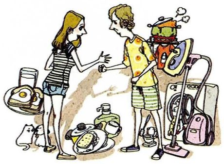
How do you divvy up domestic chores at your house?
What you seeA woman and a man facing each other, each with a pile of household things beside them — a bag, a vacuum cleaner, a suitcase, bottles. Everything divided in two.
What it means你们家家务怎么分。课本脚注：divvy up = 分、分配（口语）。
Say it like this①Whoever's home does it, which means unevenly. ②We split it by task rather than by day: one person cooks, the other cleans up. It works because nobody has to negotiate every evening. ③In my flat there's no system at all, and that's the system. Two of us clean when it bothers us, the third never does. What I've learned is that "fair" and "working" aren't the same thing — the arrangement is unfair and it functions, because the person who cares most does most, and everyone knows it. I'd rather have a rota, but I'd have to be the one who makes it, which is exactly the problem.
10
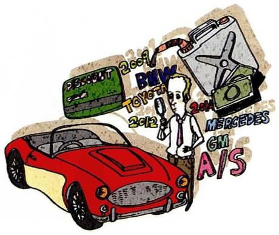
How could you get a good deal if you were buying a car?
What you seeA red sports car surrounded by newspaper pages with the words buy, sell, sales and deals printed on them. Research, spread out.
What it means如果你要买车，怎么能拿到好价钱。课本脚注：good deal = 有利的交易。could + were 是虚拟语气。
Say it like this①Know the price before you walk in, and be willing to leave. ②Two things: research the real price first, and be genuinely prepared to walk away. The second matters more — a seller can tell whether you've already decided. ③I'd do the boring part in advance: find three comparable cars, know what each is worth, and get one offer in writing from a different dealer. Then I'd go to the one I actually want and tell them the number. What I wouldn't do is negotiate in the showroom for an hour — the longer you sit there, the more the sunk time pulls you into buying something. The best deal I ever got was on a laptop, and I got it because I left the shop and they called me the next morning.
11
How did you learn how to do something difficult?
What you seeTwo people at a desk covered in loose papers, one on the phone, both looking worn out, a computer between them. Learning the hard way.
What it means你是怎么学会做一件难事的。How did —— 讲一段经过，要有先后顺序。
Say it like this①By doing it badly for a long time. ②Mostly by breaking things. I learned to code by writing programs that didn't work and then having to find out why, which took far longer than any course would have. ③The thing that actually worked was getting someone to do it in front of me. I'd read about it for weeks and understood nothing; then I sat next to a postdoc for an afternoon and it clicked in an hour. Since then I've stopped trusting my own reading as a way of learning skills — for anything with your hands, watching beats reading every time. The frustrating part is that I still default to reading, because it feels productive and doesn't require anybody's time.
12
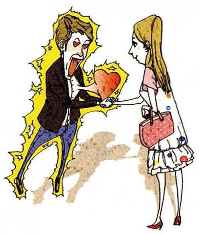
How did you feel when you first met your current sweetheart?
What you seeA man outlined in a yellow glow, holding out a big red heart toward a woman who's standing with a small pink bag. He's visibly nervous.
What it means你第一次见到现在的对象时是什么感觉。预设有伴侣，没有就按老办法处理。
Say it like this①I'm single, so I'll have to skip this one. ②No partner at the moment — but I remember the last time clearly: mainly nervous, and slightly annoyed at myself for being nervous. ③I'm single, so I'll answer for the general case instead. What I remember from those first meetings isn't attraction — it's a sudden absurd self-consciousness, like you've become aware of your own hands. And then afterwards you can't remember a word either of you said, only whether you wanted to see them again. Which, now I say it out loud, is a fairly efficient system.
13
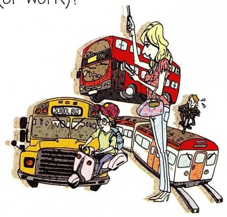
How do you go to school (or work)?
What you seeA woman standing with a bicycle beside a yellow school bus and a red bus. Three ways to get somewhere, all in one picture.
What it means你怎么去学校或上班。How do —— 习惯，用一般现在时。注意 by / on / take 的搭配。
Say it like this①On foot — it's about fifteen minutes. ②I walk, unless it's raining. It's twenty minutes each way, so I listen to something on the way and count it as my only exercise. ③I walk, and I chose where to live based on that. It's a twenty-minute walk and I've come to depend on it — it's the only part of the day with no screen and no task. When I visit friends who drive everywhere I notice how little they see of their own city. That's not a criticism, mostly; it's just that my whole neighbourhood exists for me as a route.
14
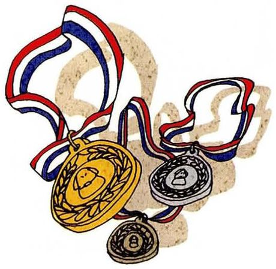
How does one win in athletics? In life?
What you seeThree medals — gold, silver and bronze — with red, white and blue ribbons tangled together. Only one of them is first.
What it means人在体育上怎么赢？在人生里呢？两问合成一道，而且第二问才是重点。
Say it like this①In athletics, faster or stronger than everyone else. In life, I'm not sure winning is the right frame. ②Athletics has a clear rule: someone crosses the line first, and that's it. Life doesn't have a line, which is why people keep borrowing the athletics one and getting unhappy. ③I'd answer them separately, because the comparison breaks down. In athletics the goal is defined for you and the measurement is exact — train, and the number improves. In life I've noticed that the people who look most successful are often running someone else's race, and doing it well. If there's a way to win at life, I'd say it's choosing the event yourself. That's much harder than training, because nobody hands you the schedule.
15
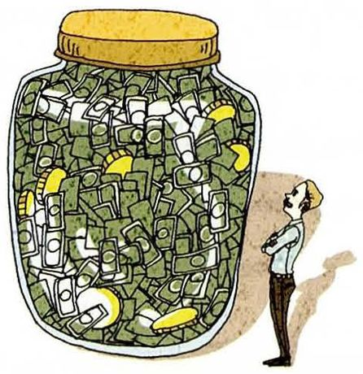
How much money is "enough"?
What you seeAn enormous glass jar stuffed to the lid with banknotes, and a tiny man standing next to it, arms folded, looking up at it. The jar is much bigger than he is.
What it means多少钱才算「够」。How much + money（不可数）。加引号的 enough 说明这是个哲学问题。
Say it like this①Enough to stop thinking about money, I'd say. ②There's a number for safety and no number for satisfaction. Enough, for me, would be the point where a broken laptop isn't a crisis. ③I'd split it into two questions, because they get confused. How much do you need to be safe — that one has an answer, and for most people in my position it's less than they'd guess. How much do you need to feel you're doing well — that one has no answer, because the reference point moves. Everyone I know who's raised their income has also raised what counts as normal within about six months. So "enough" isn't a number, it's a decision you either make or never make.
05重点词汇（美式音标）
课首页脚注给了 5 个词。其中 divvy up 和 good deal 是非常口语的说法，值得单独记。
A · 课本脚注的 5 个词
词
音标
课上怎么用
中文
unconditional
/ˌʌnkənˈdɪʃənl/
unconditional love 无条件的。反义 conditional
无条件的
priority
/praɪˈɔːrəti/
give top priority to sth / make sth a priority
优先事项
sake
/seɪk/
for your sake / for the sake of sth 为……的缘故。固定搭配
缘故
divvy up
/ˈdɪvi ʌp/
divvy up the chores 口语「分」。比 divide 随意
分摊
good deal
/ɡʊd diːl/
get a good deal on sth 划算的交易。注意介词 on
划算的买卖
B · 数量与程度
表达
音标
课上怎么用
中文
roughly
/ˈrʌfli/
Roughly two hours a day. 大约。比 about 更明确是估算
大约
on average
/ɑːn ˈævərɪdʒ/
On average, five hours a night.
平均
at least / at most
/æt liːst/, /æt moʊst/
At least six, at most eight.
至少 / 至多
spend on
/spend ɑːn/
I spend about 500 on food. spend money on sth；spend time doing sth
花费在
pocket money
/ˈpɑːkɪt ˌmʌni/
pocket money from my parents 零花钱。英式常用，美式说 allowance
零花钱
add up to
/æd ʌp tuː/
The small things add up. 加起来达到。讲钱和习惯都好用
累积成
C · 方法与过程
表达
音标
用法
中文
persuade sb to do
/pərˈsweɪd/
persuade them to study 说服某人做某事
说服
rather than
/ˈræðər ðæn/
make it interesting rather than punishing 而不是（连接同类成分）
而不是
concrete
/ˈkɑːnkriːt/
a concrete example 具体的（和 abstract 相对）
具体的
rota
/ˈroʊtə/
make a rota for the chores 轮值表（英式）
值班表
sunk time
/sʌŋk taɪm/
the sunk time pulls you in 沉没时间（已投入无法收回）
沉没成本
walk away
/wɔːk əˈweɪ/
be prepared to walk away 走开（谈判时不买）
放弃交易
default to
/dɪˈfɔːlt tuː/
I default to reading. 习惯性地选择
默认选择
06老师大概率会问的问题
这一课有几道题是纯议论（怎么赢、多少钱算够），老师通常会追问理由。准备观点比准备数字重要。
How much money is "enough" for you?
I've thought about the number and concluded the number isn't the point. Enough, for me, is when a surprise expense doesn't rearrange my month — a broken laptop, a flight home. Past that I'd be buying things I don't need with time I can't get back. The trouble is that I know people who have ten times that and still don't feel safe, so I'm not sure "enough" is a figure at all. It might be a decision, and some people never make it.
先给一个具体的标准（a surprise expense doesn't rearrange my month），再说明为什么数字不行。这种「给标准而不是给数字」的答法，比任何具体金额都有说服力。
How would you persuade someone to do something they don't want to do?
I'd try to find out why they don't want to, and it's usually not the reason they give. Someone who says they have no time often means they don't see the point. So the work isn't persuasion, it's diagnosis — and if you argue with the stated reason you'll lose, because you're answering the wrong objection.
if you argue with the stated reason you'll lose, because you're answering the wrong objection —— 这句话本身就是一个可以背走的观点，而且它解释了为什么「说服」经常失败。
How is learning a language different from learning anything else?
It's the only thing I've studied where knowing and doing are almost unrelated. I can read a paper in English and explain it, and then fail to order a coffee. With maths, if you understand it you can do it — the gap is small. With a language the gap is enormous, and the only thing that closes it is being embarrassed on a regular schedule.
the only thing that closes it is being embarrassed on a regular schedule 是一个真实且有幽默感的总结。用「和数学对比」来说明，比抽象描述清楚得多。
How do you usually deal with something you can't do?
Badly, for the first two days. Then I do the thing I should have done at the start, which is finding somebody who can do it and watching them. My instinct is always to read about it alone, which is slower and lonelier, and I know that about myself and do it anyway. I've stopped trying to fix the instinct and started setting a deadline instead: forty-eight hours of struggling alone, then I ask.
Rent, food, and then a surprising amount on small conveniences — delivery, coffee, taxis. The big purchases people talk about rarely happen; it's the twenty-yuan decisions, four times a day, that decide whether there's anything left. And there's a second category I notice more now: money spent to feel like you're keeping up. Concert tickets, a better phone. It's not vanity exactly, it's that everyone else seems to be doing those things and opting out costs something socially.
「小钱决定一切」+「花在『不落后』上的钱」两层，把消费讲得比「年轻人爱买奶茶」深刻得多。opting out costs something socially 是很准确的观察。
How does one win in life, if not by the usual measures?
I'd say by choosing your own event. The unhappiest people I know aren't failing — they're succeeding at something they never chose, and they can feel it. Whereas someone doing modestly at something they picked seems to carry themselves differently. I can't prove that and it's probably what everyone says when they're not winning the usual race, so take it with some suspicion.
最后那句自我提醒（take it with some suspicion）非常关键 —— 它显示你知道自己可能是在为自己找理由。这种诚实在议论题里比结论本身更打动人。
07这节课最容易犯的错
这一课的错误集中在两处：how many / how much 的搭配，以及「怎么去某地」的介词。
✗How much hours do you sleep? ✓How many hours do you sleep?
hour 是可数名词，必须用 how many。同理：how many snacks、how many cigarettes。
✗How many money do you spend? ✓How much money do you spend?
money 不可数，用 how much。这个错和上一条是同一个知识点的两面，都会在口语里出现。
✗I go to school by foot. ✓I go to school on foot. / I walk to school.
步行是 on foot，不是 by foot。by 只用于 by bus / by car / by bike 这类交通工具（不含 on foot）。
✗I spend two hours to study English every day. ✓I spend two hours studying English every day.
spend time doing sth，不是 to do。这一课第 6 题正好考这个句式。
✗I sleep about seven hours every days. ✓I sleep about seven hours every day.
every 后面接单数：every day。加 s 是典型的笔误型错误，但说快了也会犯。
✗How do you think to persuade your parents? ✓How would you persuade your parents?
how 后面不接 think to do。要表达「你觉得怎么」，用 How would you…? 或 How do you think you could…?
✗My first job I got it from my friend introduce. ✓I got my first job through a friend's introduction.
「通过朋友介绍」用 through。而且英语里避免「宾语前置 + 代词重复」（My job I got it）这种结构。
✗I want to say that academic success is not everything. 用来回答「怎么说服父母」 ✓I'd show them rather than argue — I'd point to what I'm actually building.
第 3 题问的是 how（怎么说服），不是 what（你的观点）。答成观点就是答错类型了。